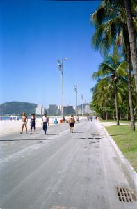

|
Dimanche 4 novembre
Il pleut. Toute la journée. On tente une sortie, on est vite trempé malgré
les capes de pluie. Pas d'internet dans le coin, on se rabat sur la télé dont
notre chambre est équipée. Grand luxe. On découvre les programmes lamentables
du Brésil, dignes de ceux de TF1!!! Du sport, des voitures et des filles en
string! Tout cela coupé de maintes pubs. Pour se réconforter, on va manger "au
kilo"! Ici, c'est 10 réals le kilo (30FF), à Manaus c'était 7 réals. On découvrira
Rio demain si les pluies diluviennes cessent.
Lundi 5 novembre
Ce n'est pas le grand beau temps mais il bruine à peine, profitons en! Direction
le centre ville. Ville très moderne, pleine de très très hauts immeubles, avec
une circulation dense facilitée par de larges avenues, Rio reste agréable grâce
aux nombreuses rues piétonnes et aux parcs où chats et agoutis (genre de gros
rats sans queue de la taille d'un chat) se promènent peinards. Du centre, on
revient sur Gloria en passant par Lapa. Le soleil se montre, il fait très chaud.
Le soir, on se rend encore plus compte que la journée du nombre important de
sans-abris et encore, on n'est pas allé dans les favelas, les bidonvilles.
Au Brésil, encore plus qu'ailleurs, c'est le melting pot, le méga mélange humain.
Africains, portugais, indiens, espagnols, métis et autres se côtoient partout
sans toutefois sembler vraiment se mélanger. Ca surprend un peu ces brésiliens
blonds au milieu des cheveux noirs frisés.
Mardi 6 novembre
Il fait beau. hier, on a aperçu le Corcovado, le christ rédempteur géant qui
veille sur Rio. Sans toutefois l'empêcher d'être une méga ville du crime, des
réglements de comtes et de la corruption de la police. Aujourd'hui, on va à
la plage! Aux plages pour être exact. On part à pied vers Copacabana. Entre
Copacabana et nous, 3 ou 4 plages et 6 ou 7 km au moins. Si l'eau est parfois
polluée, les plages sont propres et super agréables, bordées de parcs et d'allées
piétonnes ou cyclistes où les sportifs s'exercent à l'ombre des palmiers. Parmi
eux, beaucoup de "sportifs" de tous âges avec de gros bidons à l'air, des strings
qui rentrent dans les fesses, des nénés qui débordent des hauts de maillots
de bain... Et on croise aussi énormément de femmes enceintes venues faire prendre
l'air à leur gros ventre. Bien sûr, il y a aussi la police qui vérifie quelques
papiers pistolet à la main!
Après quelques kilomètres, on arrive à la plage de Botafogo d'où la vue sur
le christ est superbe. On est au pied du pain de sucre, cet immense bloc de
granit qui semble sortir de nulle part et surplombe les plages et la ville sur
la baie de Rio. On ne peut pas y monter, pas de paiment par carte de crédit
au téléphérique et pas de distributeurs non plus dans le coin... Et dire que
même les hôtels les meilleurs marché et les supermarchés utilisent ce moyen
de paiement...
Tant pis, direction Copacabana, sa plage et ses filles aux gros seins... Quartier
plutôt agréable (c'est Marion qui est l'auteur de ce bel à propos...) très ambiance
vacances, plage agréable et très belle, eau froide! Il paraît qu'ici, en été,
il n'y a pas de place pour tout le monde, les gens discutent donc debout sur
la plage! Le long de celle-ci, que d'énormes hôtels très luxueux de plus de
10 étages. On est à Rio!
On trouve un distributeur et on monte en haut du pain de sucre admirer Rio
à nos pieds. Au-dessus de nos tête, volent de superbes oiseaux géants. De loin,
lorsqu'ils planent, on dirait presque des chauves souris. Ils se laissenty porter
par les courants d'air chaud et on les voit monter à la verticale comme s'ils
étaient dans un ascenseur.
Mercredi 7 novembre
On a des courbatures dans les cuisses et quelques petits coups de soleil, souvenir
des plages et des balades dans cette ville. Aujourd'hui, on quitte le Brésil
pour le Mexique. On décolle à midi ce qui nous permet d'admirer la baie de Rio
que l'on survole. Superbe. Plus tard, après une escale à Sao Paulo, on survole
l'Amazonie. Pendant des heures. Immensité verte où se détachent les rios serpentueux
aux eaux jaunâtres. On dirait que d'immenses serpents se déplacent entre les
arbres. Immense. Sans aucune habitation visible.
Quelques 10 heures plus tard, on arrive à Mexico. Il est 20h30 ici, minuit
trente à Rio. Il fait plus frais. On est repassé de l'autre côté de l'équateur
et ici, c'est l'hiver!
Suite du voyage : Le Mexique
|
Brésil
Rio De Janeiro
|

Brésil
Rio De Janeiro
|

Brésil
Rio De Janeiro
|
Brésil
Rio De Janeiro
|
|
|